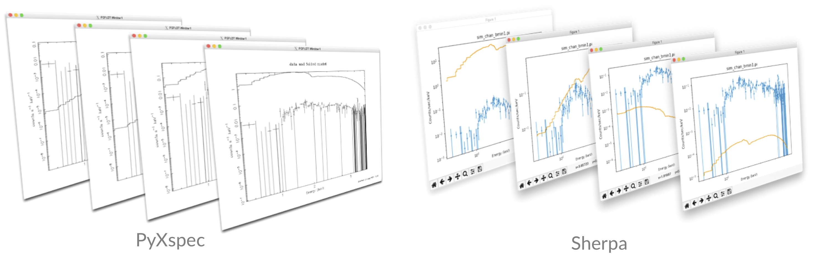
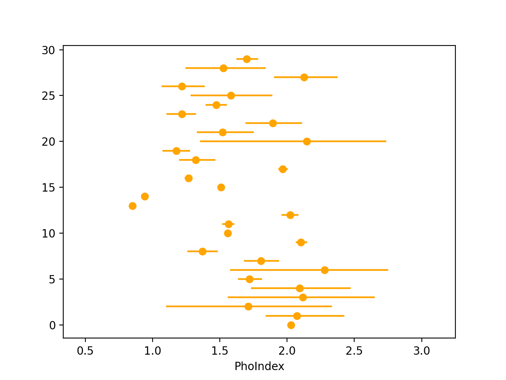

Welcome to the Bayesian X-ray Analysis (BXA) tutorial page.
BXA connects PyXspec/Sherpa to nested sampling algorithms for Bayesian parameter estimation and model comparison with the Bayesian evidence.
For any questions/comments/suggestions concerning the tutorial, contact Peter Boorman and/or Johannes Buchner by e-mail.
Setup
⚠️ WARNING ⚠️ BXA requires a working form of PyXspec and/or Sherpa.
Make sure either of these are installed before doing the exercises!
For PyXspec users
https://heasarc.gsfc.nasa.gov/docs/software/heasoft/
$ conda activate bxa(if using a specific conda environment, otherwise skip this step)
$ python -c 'from xspec import *'
For Sherpa users
https://cxc.cfa.harvard.edu/ciao/download/
$ conda activate ciao
$ sherpa
BXA installation
https://johannesbuchner.github.io/BXA/#installation
PyXspec:
Sherpa:
$ python -c 'import ultranest'
$ python -c 'from xspec import *'
$ python -c 'import bxa.xspec as bxa'
$ python -c 'import ultranest'
$ python -c 'import bxa.sherpa as bxa'
Useful links
Xspec & PyXspec documentation:
https://heasarc.gsfc.nasa.gov/xanadu/xspec/
Xspec Facebook group:
https://www.facebook.com/groups/320119452570/?ref=share
Sherpa reference for commands:
https://cxc.cfa.harvard.edu/sherpa/ahelp/sherpa4.html
Astrostatistics Facebook group:
https://www.facebook.com/groups/astro.r/?ref=share
X-ray Data Primer by CXC:
https://cxc.cfa.harvard.edu/cdo/xray_primer.pdf
Information on C-statistics (& modified C-statistics) used in Xspec & Sherpa by Giacomo Vianello:
https://giacomov.github.io/Bias-in-profile-poisson-likelihood/
Sherpa script for fitting obscured AGN with BXA:
https://github.com/JohannesBuchner/BXA/blob/master/examples/sherpa/xagnfitter.py
X-ray Spectral Fitting lectures by Johannes Buchner:
https://youtu.be/_r4ecpje7nE
https://youtu.be/EIzhDG-0Ji8
UltraNest documentation:
https://johannesbuchner.github.io/UltraNest/readme.html
Modified C-statistics (aka W-stat)
https://giacomov.github.io/Bias-in-profile-poisson-likelihood/
BXA citation - Buchner et al., (2014; A&A)
https://ui.adsabs.harvard.edu/abs/2014A%26A...564A.125B/abstract
UltraNest citation - Buchner (2021, JOSS)
https://arxiv.org/abs/2101.09604
Nested sampling review - Buchner (2021)
https://arxiv.org/abs/2101.09675
PCA background - Simmonds et al., (2018, A&A)
https://ui.adsabs.harvard.edu/abs/2018A%26A...618A..66S/abstract
Simulation-based calibration of false-positive & false-negative rates - Baronchelli et al., (2018, MNRAS)
https://ui.adsabs.harvard.edu/abs/2018MNRAS.480.2377B/abstract
Bayesian Hierarchical Modelling:
- Baronchelli et al., (2020, MNRAS), Section A1
https://ui.adsabs.harvard.edu/abs/2020MNRAS.498.5284B/abstract - Kuraszkiewicz et al., (2021, ApJ), Section A1
https://ui.adsabs.harvard.edu/abs/2021ApJ...913..134K/abstract - Liu et al., (2021, arXiv), Section 3.7
https://ui.adsabs.harvard.edu/abs/2021arXiv210614522L/abstract
PosteriorStacker (for deriving sample distributions from individual source posterior distributions)
https://github.com/JohannesBuchner/PosteriorStacker
example_advanced_priors.py (shows how to include custom priors in BXA)
https://github.com/JohannesBuchner/BXA/blob/master/examples/xspec/example_advanced_priors.py
Do you know of any others? Please get in touch!
Session 1 - spectral fitting & model comparison
Key objectives:
First, download the following spectral files from here:
Source spectrum (binned with
ftgrouppha grouptype=bmin groupscale=1):sim_chan_bmin.piResponse:
chan.rmfEffective area:
chan.arfBackground spectrum:
sim_chan_bkg.pi
PyXspec & Sherpa commands for setting up a spectral fit:
PyXspec:
$ ipython
Sherpa:$ sherpa
PyXspec:
$ python3 pyxspec_script.py
Sherpa:$ sherpa sherpa_script.py
PyXspec:
from xspec import *import bxa.xspec as bxa
Sherpa:import bxa.sherpa as bxa
PyXspec:
Fit.statMethod = "cstat"
Sherpa:set_stat("wstat")
PyXspec:
Plot.xAxis = "channel"/"keV"
Sherpa:set_analysis("chan")# or "ener"
Plot.device = "/null"to not have one (stops plotting window pop-ups)
Plot.device = "/xw"(or any other plot device)
PyXspec:
s = Spectrum("sim_chan_bmin.pi")(ors = AllData("1:1 sim_chan_bmin1.pi"))
Sherpa:load_pha(1, "sim_chan_bmin.pi")
Pyxspec:
s.ignore("0.-0.5 8.-**")(orAllData.ignore("1:0.-0.5 8.-**"))
Sherpa:ignore_id(1, "0.:0.5,8.:")
PyXspec:
(mymod = Model("powerlaw")
Sherpa:mymod = xspowerlaw.mypow(xsis used to indicate Xspec models)set_source(1, mymod)get_default_id()can be used to show the default id that is used if an id is not specified)
PyXspec:
mymod.powerlaw.PhoIndex.values = (value, delta, min, bottom, top, max)(orAllModels(1)(1).values = ...)
mymod.powerlaw.norm.values = (value, delta, min, bottom, top, max)(orAllModels(1)(2).values = ...)
Sherpa:set_par(mypow.phoindex, val=value, min=min, max=max)set_par(mypow.norm, val=value, min=min, max=max)
Exercise 1.1 - prior predictive checks
Prior predictive checks are useful to see if the priors chosen can lead to realistic model realisations.
Note: log uniform priors cannot be zero or negative. Make sure the parameter ranges you supply are positive.PyXspec:
bxa.create_uniform_prior_for(model, param)
bxa.create_loguniform_prior_for(model, param)bxa.create_gaussian_prior_for(model, param, mean, std)Sherpa:
bxa.create_uniform_prior_for(param)
bxa.create_loguniform_prior_for(param)bxa.create_gaussian_prior_for(param, mean, std)
powerlaw model (note norm varies over many orders of magnitude, and PhoIndex can be assumed to have some value within 1.9 +/- 0.15):
PyXspec:
prior1 = bxa.create_gaussian_prior_for(mymod, mymod.powerlaw.PhoIndex, 1.9, 0.15)prior2 = bxa.create_loguniform_prior_for(mymod, mymod.powerlaw.norm)
Sherpa:
prior1 = bxa.create_gaussian_prior_for(mypow.phoindex, 1.9, 0.15)prior2 = bxa.create_loguniform_prior_for(mypow.norm)
Using a loguniform prior may not give the posterior values of that parameter in log units in Sherpa. Instead, the
Parametermodule can convert a parameter to log units, and then one can use a uniform prior for that parameter. E.g.:from sherpa.models.parameter import Parameterlogpar = Parameter(modelname, parname, value, min, max, hard_min, hard_max)mymod.norm = 10**logparNote: the parameter will only be valid for working in BXA. If you want to define a log parameter and use this with a standard Sherpa fit, the log parameter must appear in the model expression.Create a solver: PyXspec: solver = bxa.BXASolver(transformations=[prior1, prior2], outputfiles_basename="powerlaw_pyxspec")Sherpa:solver = bxa.BXASolver(prior=bxa.create_prior_function([prior1, prior2]), parameters=[param1, param2], outputfiles_basename="powerlaw_sherpa")Make sureoutputfiles_basenameis unique if running PyXspec and Sherpa in the same directory!Perform prior predictive checks:
- Generate random samples of prior parameter values:
PyXspec:
values = solver.prior_function(numpy.random.uniform(size=len(solver.paramnames)))
Sherpa:values = solver.prior_transform(numpy.random.uniform(size=len(solver.paramnames)))- Set the parameters to these values:
PyXspec:
from bxa.xspec.solver import set_parameterssolver.set_parameters(transformations=solver.transformations,values=values)
Sherpa:for i, p in enumerate(solver.parameters): p.val = values[i]- Plot the resulting prior model samples (with the data to help guide the eye):
PyXspec:
Plot("ldata")Sherpa:plot_fit(xlog=True, ylog=True)Are the model ranges covered by the priors physically-acceptable?
Exercise 1.2 - fit a model to a spectrum
PyXspec:results = solver.run(resume=True)
Sherpa:results = solver.run(resume=True)(note different hyperlinks)
results contains the posterior samples (results["samples"]) for each parameter and the Bayesian evidence (results["logZ"], results["logZerr"]). The quantities should also be printed to the screen after the fit is completed.
pandas (may require installing with e.g., conda):
import pandas as pd
df = pd.DataFrame(data=results["samples"], columns=solver.paramnames)
Exercise 1.3 - fit and compare multiple models
Here we use the Bayesian evidence to perform model comparison.
Note to use TBabs, one should set the abundances to those from Wilms, Allen & McCray (2000):
PyXspec:
Xset.abund = "wilm"
Sherpa:set_xsabund("wilm")Fit the following additional 2 models to the data with BXA (don't forget to give unique outputfiles_basenamevalues!):
- Absorbed powerlaw PyXspec:
TBabs * powerlaw
Sherpa:xstbabs * xspowerlaw- Absorbed powerlaw + Gaussian emission line (the emission line is known to have line centroid energy 6.3 +/- 0.15 keV, and you can assume the line is narrow with fixed width Sigma = 1 eV) PyXspec:
TBabs * powerlaw + gaussian
Sherpa:xstbabs * xspowerlaw + xsgaussianCopy the model_compare.py script to your working directory to perform Bayesian evidence model comparison Run the script with: $ python3 model_compare.py outputfiles_basename1/ outputfiles_basename2/ outputfiles_basename3/Compute the Akaike Information Criterion (AIC) for each model: import jsonbasenames = [outputfiles_basename1, outputfiles_basename2, outputfiles_basename3]loglikes = dict([(f, json.load(open(f + "/info/results.json"))['maximum_likelihood']["logl"]) for f in basenames])dofs = dict([(f, len(json.load(open(f + "/info/results.json"))['paramnames'])) for f in basenames])aic = dict([(basename, (2. * dofs[basename] - 2. * loglike)) for basename, loglike in loglikes.items()])Which model best explains the data?
Exercise 1.4 - error propagation
By generating quantities directly from the posterior samples, we propagate the uncertainties and conserve any structure (e.g., degeneracies, multiple modes).
EW) of an emission line is defined as the flux in the line divided by the flux of the continuum at the line energy (see the Xspec documentation for more information).EW = (mymod.gaussian.norm / mymod.powerlaw.norm) * mymod.gaussian.LineE ** mymod.powerlaw.PhoIndex
Sherpa: EW = (line.norm / mypow.norm) * line.linee ** mypow.phoindexresults["samples"] to derive the posterior distribution on equivalent width for the emission line component. If using pandas:
import corner
figure = corner.corner(df, labels = df.columns, quantiles = [0.16, 0.5, 0.84], show_titles = True)
Exercise 1.5 - visualisation
outputfiles_basename/plots/).import matplotlib.pyplot as plt
print('creating quantile-quantile plot ...')
plt.figure(figsize=(7,7))
with bxa.XSilence():
solver.set_best_fit()
bxa.qq.qq(prefix=outputfiles_basename, markers=5, annotate=True)
print('saving plot...')
plt.savefig(outputfiles_basename + 'qq_model_deviations.pdf', bbox_inches='tight')
plt.close()
Sherpa: (produces file for plotting)
bxa.qq.qq_export(1, bkg=False, outfile=outputfiles_basename + "_qq", elow=0.2, ehigh=10)
powerlaw model Q-Q plot show? Is this model lacking any components?Exercise 1.6 - (optional) fitting multiple datasets simultaneously with BXA
Sometimes it is advantageous to fit multiple spectra for the same source simultaneously with e.g., a cross-calibration constant to account for instrumental differences in the different spectra.
Download the NuSTAR/FPMA spectral files:sim_nuA_bmin.pi) & background spectrum (sim_nuA_bkg.pi) here.nustar.rmf) and effective area (point_30arcsecRad_1arcminOA.arf) files from the Point source simulation files (distributed by the NuSTAR team, more info here).PyXspec:
s = AllData("1:1 sim_nuA_bmin1.pi 2:2 sim_chan_bmin1.pi")
AllData.ignore("1:0.-3. 78.-** 2:0.-0.5 8.-**")
mymod = Model("constant * powerlaw")
AllModels(1)(1).values = (1., -0.01)
AllModels(2)(1).values = (1., 0.01, 0.01, 0.01, 10., 10.)
Sherpa:
load_pha(1, "sim_nuA_bmin1.pi")
ignore_id(1, "0.:3.,78.:")
load_pha(2, "sim_chan_bmin1.pi")
ignore_id(2, "0.:0.5,8.:")
mymod = xspowerlaw.mypow
mymod1 = xsconstant("xcal1") * mymod
set_par(xcal1, val=1, frozen=True)
mymod2 = xsconstant("xcal2") * mymod
set_par(xcal2, val=1, min = 1.e-2, max = 1.e2)
set_source(1, mymod1)
set_source(2, mymod2)
transformations.append(bxa.create_loguniform_prior_for(AllModels(2), AllModels(2).constant.factor))solver = bxa.BXASolver(transformations=transformations, outputfiles_basename="xcal_pl_pyxspec")results = solver.run(resume=True)Sherpa:
priors.append(bxa.create_loguniform_prior_for(xcal2))
parameters.append(xcal2)
solver = bxa.BXASolver(prior=bxa.create_prior_function([prior1, prior2, ...]), parameters=[param1, param2, ...], outputfiles_basename="xcal_pl_sherpa")
results = solver.run(resume=True)Exercise 1.7 - (optional, Sherpa only) automated background fitting with BXA
So far, the exercises have used modified C-statistics (aka W-statistics) in which the background is modelled as a stepwise function with the same number of parameters as bins. This process typically requires some form of minimal binning (see discussion here).
Using C-statistics can be more flexible, since no binning is required and instead a background model is used. The auto_background function in BXA provides a powerful way to implement such background models in Sherpa, and simultaneously fit with a source model using BXA.
Load the automatic PCA background model (see Simmonds et al., 2018):
from bxa.sherpa.background.pca import auto_background
set_model(1, model)
convmodel = get_model(1)
bkg_model = auto_background(1)
set_full_model(1, convmodel + bkg_model*get_bkg_scale(1))
Remember to include the zeroth order component from the PCA background model in the priors and parameters list so that BXA knows to vary it as a free parameter:
parameters += [bkg_model.pars[0]]
priors += [bxa.create_uniform_prior_for(bkg_model.pars[0])]
get_bkg_fit, get_bkg_fit_ratio, get_bkg_fit_resid).Session 2 - more advanced concepts
Key objectives:
fakeit):
Sherpa (usingmymod = Model("powerlaw")
mymod.powerlaw.PhoIndex.values = (1.9, 0.01, -3., -3., 3., 3.)
mymod.powerlaw.norm.values = (1.e-3, 0.01, 1.e-8, 1.e-8, 1., 1.)
fakeit_kwargs = {}fakeit_kwargs["response"] = "chan.rmf"fakeit_kwargs["arf"] = "chan.arf"fakeit_kwargs["background"] = "chan_bkg.pi"fakeit_kwargs["exposure"] = 30.e3fakeit_kwargs["correction"] = "1."fakeit_kwargs["backExposure"] = 30.e3fakeit_kwargs["fileName"] = "sim_chan.pi"AllData.fakeit(1, FakeitSettings(**fakeit_kwargs))
fake_pha):
mymod = xspowerlaw.mypowset_par(mymod.phoindex, val = 1.9, min = -3., max = 3.)set_par(mymod.norm, val = 1.e-3, min = 1.e-8, max = 1.)load_pha(1, "chan_src.pi")(loading pre-exising source spectrum with rmf, arf & bkg present)set_source(1, mymod)fakepha_kwargs = {}fakepha_kwargs["rmf"] = get_rmf()fakepha_kwargs["arf"] = get_arf()fakepha_kwargs["bkg"] = get_bkg()fakepha_kwargs["exposure"] = 30.e3fake_pha(1, **fakepha_kwargs)save_pha(1, "sim_chan.pi", clobber = True)
Exercise 2.1 - Bayesian Hierarchical Modelling
Here we will combine several individual source posterior distributions to derive a sample distribution of photon index .
$ pip install posteriorstacker$ python ex21_pyxspec.py) or Sherpa ($ sherpa ex21_sherpa.py) script. The script will generate 30 UltraNest output folders by:
- Simulating a NuSTAR spectra from an
absorbed powerlawmodel (see Exercise 1.3), withPhoIndexsampled from a Gaussian distribution 1.8 +/- 0.3. Note you will need the Point source simulation files distributed by the NuSTAR team to run the scripts (more info here). - Each spectrum will then be fit with BXA using non-informative priors for line-of-sight absorption, powerlaw photon index and powerlaw normalisation.
ultranest_posteriors directory, run:
$ load_ultranest_outputs.py \
fitsim0/ fitsim1/ fitsim2/ fitsim3/ fitsim4/ fitsim5/ fitsim6/ ... \
--samples 1000 \
--parameter PhoIndex \
--out posterior_samples.txtposterior_samples.txt file contains 1000 sampled rows of each posterior.import numpy as npimport pandas as pdquantiles = [16, 50, 84]x = np.loadtxt("posterior_samples.txt")q = np.percentile(x, quantiles, axis = 1)df = pd.DataFrame(data = {"q%d" %(qvalue): q[i] for i, qvalue in enumerate(quantiles)})
import matplotlib.pyplot as pltplt.xlabel("PhoIndex")plt.errorbar(x=df["q50"], xerr=[df["q50"]-df["q16"], df["q84"]-df["q50"]], y=range(len(df)), marker="o", ls=" ", color="orange")plt.xlim(df["q16"].min() - 0.5, df["q84"].max() + 0.5)plt.show()
$ posteriorstacker.py posterior_samples.txt 0.5 3. 10 --name="PhoIndex"posteriorsamples.txt_out.pdf file.PhoIndex? What would happen if you acquired more posterior samples (i.e. by increasing population_size in the simulation scripts) and/or used higher signal-to-noise spectra to fit?Exercise 2.2 - calibrating model comparison thresholds
Here we will estimate the signal-to-noise ratio required in the observed data for the Bayes factors to make a model selection.
absorbed powerlaw + gaussian best-fit model that you found in Exercise 1.3, with the original Chandra spectrum files.powerlaw, absorbed powerlaw and absorbed powerlaw + gaussian models with BXA.absorbed powerlaw + gaussian) selected in the brighter and fainter samples?Exercise 2.3 - posterior predictive checks
Here we will test the ability of the model to reproduce the nuances in the source spectrum with simulations.
results = solver.run(resume=True)) for the powerlaw model from Exercise 1.2.stat = Fit.statistic
dof = Fit.dof
Sherpa:
statinfo = get_stat_info()
stat = statinfo[1].statval
dof = statinfo[1].dof
- Simulate the best-fit model (make sure to use the same spectral files and exposure time as the original).
- Store the simulated C-statistic & dof values of the simulated data and model.
absorbed powerlaw + gaussian model. Is this fit acceptable?Tips & tricks
import bxa, pkg_resources
pkg_resources.get_distribution("bxa").version
results = solver.run(frac_remain=0.5, max_num_improvement_loops=0)
bxa.BXASolver.allowed_stats.append("chi2")
Sherpa: bxa.BXASolver.allowed_stats.append("Chi2")
Here is an example fit to the image used in this Sherpa tutorial for 2D fitting (left, middle and right panels show the image, best-fit model and residuals respectively):import bxa.sherpa as bxaload_image("image.fits")image_data()set_coord("physical")set_stat("cash")model = gauss2d.g1 + gauss2d.g2 + const2d.bgset_source(model)set_par(g1.ampl, val = 20., min = 1., max = 1.e2)...parameters = [g1.ampl, ...]priors = [bxa.create_loguniform_prior_for(g1.ampl), ...]priorfunction = bxa.create_prior_function(priors)solver = bxa.BXASolver(prior=priorfunction, parameters=parameters, outputfiles_basename = "fit2d_sherpa")results = solver.run(resume=True)image_data()image_model(newframe=True)image_resid(newframe=True)
create_custom_prior_for() (example taken from example_advanced_prior.py):
PyXspec:
def my_custom_prior(u):# prior distributions transform from 0:1 to the parameter range# here: a gaussian prior distribution, cut below 1/above 3x = scipy.stats.norm(1.9, 0.15).ppf(u)if x < 1.:x = 1if x > 3:x = 3return xtransformations = [bxa.create_custom_prior_for(model, parameter, my_custom_prior)]